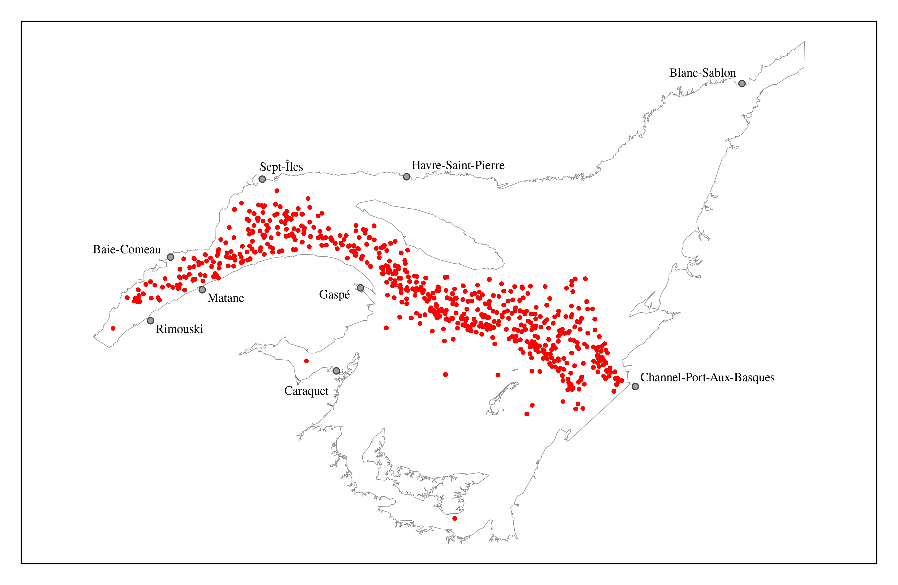
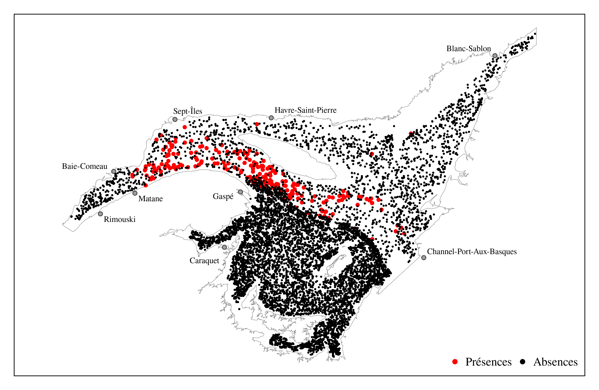
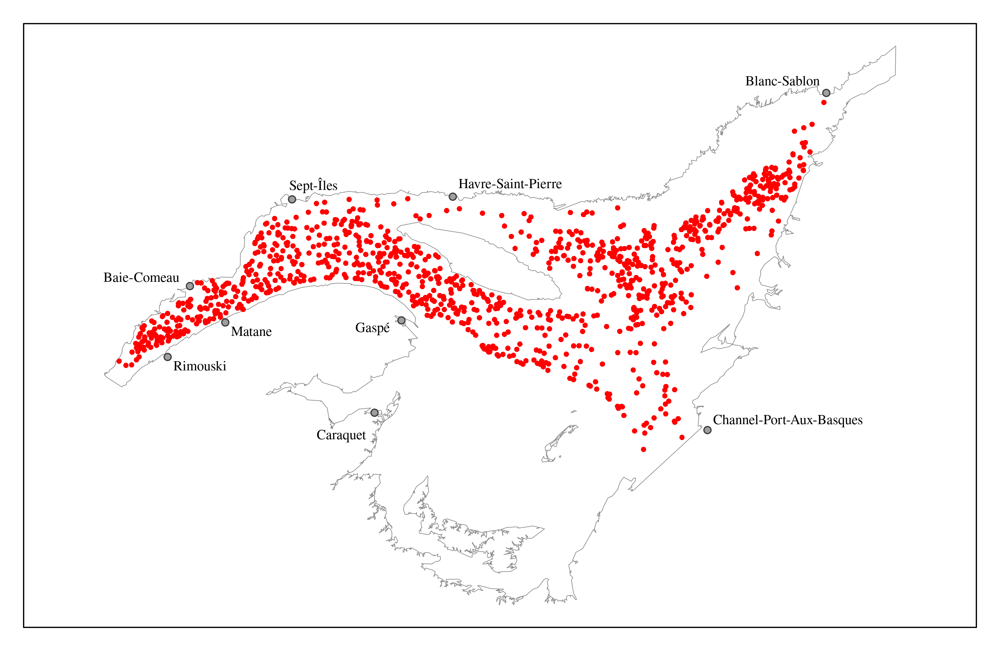

Une donnée d’occurrence présente la preuve de la présence d’une espèce à un endroit et un temps précis (Wieczorek et al. 2012). Lorsque tous les taxons visés par l’échantillonnage (p. ex. endobenthos) sont identifiés à un endroit et un temps précis, une donnée d’occurrence d’un taxon qui n’a pas été identifié présente la preuve de l’absence du taxon à un endroit et un temps précis (Wieczorek et al. 2012). Le terme «occurrence» utilisé dans ce rapport signifie donc la présence ou l’absence observée d’un taxon à un endroit et un temps précis.
Sources de données
Les données d’occurrences des plumes de mer proviennent de deux sources:
Figure 3.2: Localisation des points d’échantillonnage lors du relevé multidisciplinaire de poissons de fond et de crevette d’août dans l’estuaire et le nord du golfe du Saint-Laurent de 2004 à 2021 effectué à bord du NGCC Teleost
D’autres relevés ont également été réalisés sur d’autres navires pour la partie nord du golfe du Saint-Laurent:
NM Gadus Atlantica (1978-1994)
NM Lady Hammond (1984-1990)
NGCC Alfred Needler (1990-2005)
Par contre, il est spécifié que la qualité des données s’est améliorée au fil du temps et que les données ne sont pas directement comparables entre les différents relevés.
Inférence des absences
Les jeux de données utilisés contiennent l’identification de toutes les espèces récoltées à chacun des traits de pêche. Il est donc possible d’inférer les absences d’une espèce pour chaque trait de pêche où celle-ci n’a pas été identifiée. Ces absences ne sont évidemment pas parfaites pour plusieurs raisons (p. ex. problèmes d’identification, non-détection alors que l’espèce est bien présente), mais elles amènent tout de même une information utile lors de la modélisation des aires de distribution d’espèces (Lobo, Jiménez-Valverde, and Hortal 2010). Nous avons donc inféré les absences pour les quatre espèces de plumes de mer se situant dans l’estuaire et le golfe du Saint-Laurent:
Anthoptilum grandiflorum
Balticina finmarchica
Pennatula aculeata
Ptilella grandis
Cartes des données d’occurrences
Anthoptilum grandiflorum

Figure 3.3: Données de présences d’Anthoptilum grandiflorum dans l’estuaire maritime et le golfe du Saint-Laurent
Figure 3.4: Données de présences-absences d’Anthoptilum grandiflorum dans l’estuaire maritime et le golfe du Saint-Laurent
Balticina finmarchica
Figure 3.5: Données de présences de Balticina finmarchica dans l’estuaire maritime et le golfe du Saint-Laurent

Figure 3.6: Données de présences-absences de Balticina finmarchica dans l’estuaire maritime et le golfe du Saint-Laurent
Pennatula aculeata

Figure 3.7: Données de présences de Pennatula aculeata dans l’estuaire maritime et le golfe du Saint-Laurent
Figure 3.8: Données de présences-absences de Pennatula aculeata dans l’estuaire maritime et le golfe du Saint-Laurent
Ptilella grandis
Figure 3.9: Données de présences de Ptilella grandis dans l’estuaire maritime et le golfe du Saint-Laurent
Figure 3.10: Données de présences-absences de Ptilella grandis dans l’estuaire maritime et le golfe du Saint-Laurent
Lobo, Jorge M., Alberto Jiménez-Valverde, and Joaquín Hortal. 2010. “The Uncertain Nature of Absences and Their Importance in Species Distribution Modelling.”Ecography 33 (1): 103–14. https://doi.org/10.1111/j.1600-0587.2009.06039.x.
Wieczorek, John, David Bloom, Robert Guralnick, Stan Blum, Markus Döring, Renato Giovanni, Tim Robertson, and David Vieglais. 2012. “Darwin Core: An Evolving Community-Developed Biodiversity Data Standard.”PLOS ONE 7 (1): e29715. https://doi.org/10.1371/journal.pone.0029715.